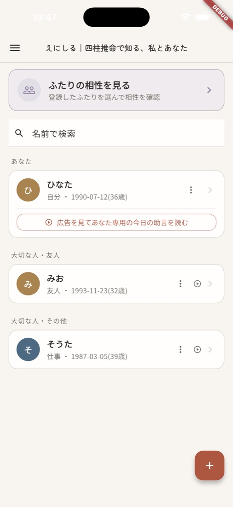
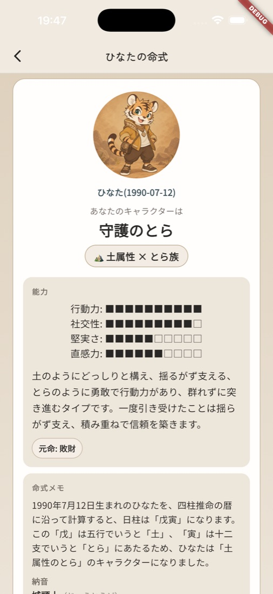
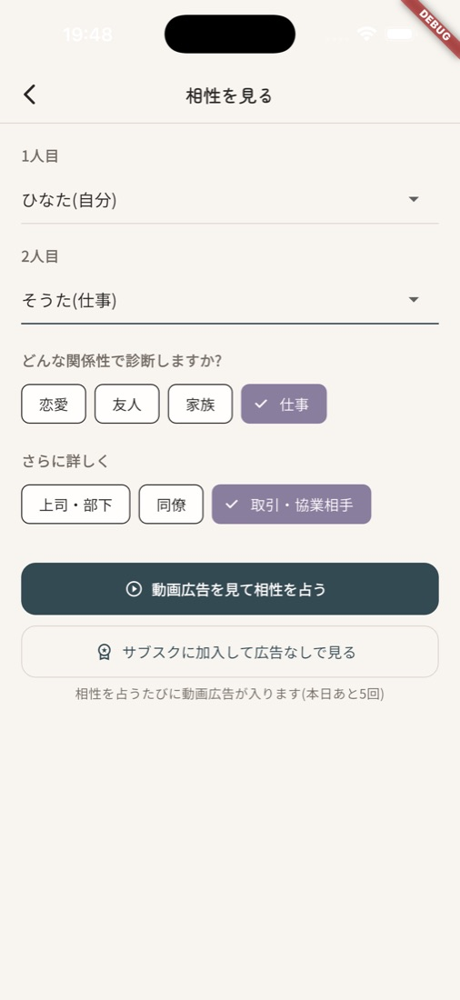
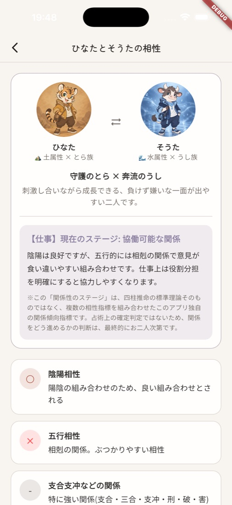

えにしる
準備中 ストアでの公開に向けて、準備を進めています。
四柱推命で知る、私とあなた。
生年月日から、自分のことも、あの人との距離感も、気軽に見てみる。四柱推命にもとづく、占いアプリです。「縁を知る」という意味を込めて、「えにしる」と名づけました。
相手が悪いわけでも、自分が悪いわけでもないのに、なぜか合わない。けれど、避けて通れない人間関係もあります。えにしるは、そんな間柄にも、「仕事」「家族」「友人」「恋愛」など、関係性に合わせた見方と、付き合い方のヒントを添えます。毎日の一言アドバイスも、あります。
こんな画面です

登録した人を、一覧で。
生年月日から、自分のキャラクターを。
どんな関係性で見るかを、選ぶ。
関係性に合わせた、相性の読み解き。
開発中の画面です。表示している人物は、すべて架空のサンプルです。機能や画面は、変更になる場合があります。
使い方
- 自分の生年月日を登録するわかれば、出生時刻と出生地も。ニックネームで、使えます。
- 命式を見る性格や強み、気をつけたい点、五行のバランス、これからの流れを読みます。
- 大切な人を足して、相性を見る相手を選び、関係性を選ぶと、その関係に合った読み解きが出ます。
無料と有料の予定
基本の鑑定結果は、無料で見られる予定です。さらに詳しい内容は、月額のサブスクリプションで見られる予定です。料金・開始時期は、未定です。
安心して使うために
入力した情報は、初期設定では、お使いの端末の中にだけ保存します。くわしくは、プライバシーポリシーをご覧ください。
占いの結果は、楽しみと参考のためのものです。的中を保証するものではなく、大切な判断は、ご自身でなさってください。
ご案内
お問い合わせ
ご質問・ご要望は、こちらまでお寄せください。
support@sawzan.com